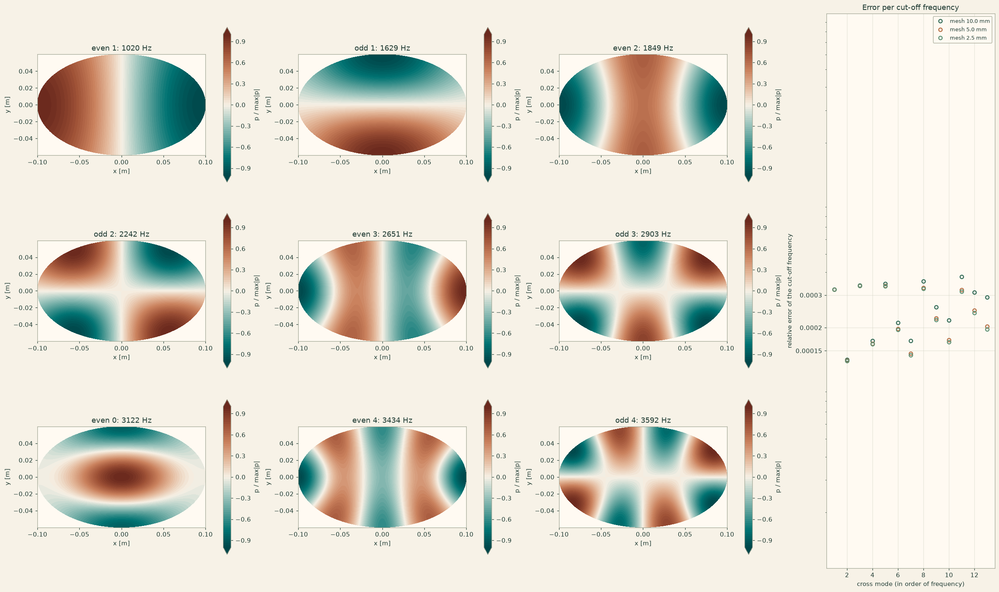
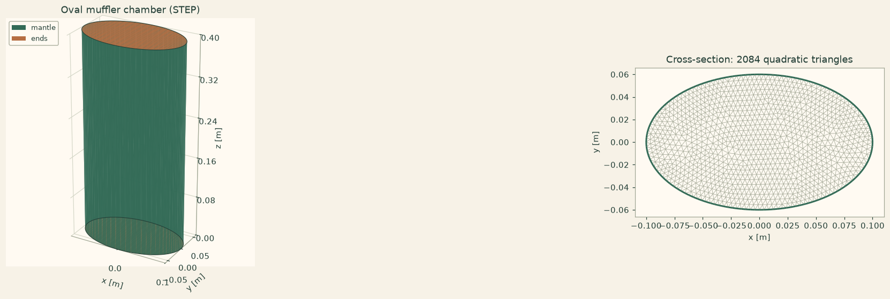

Docs › Examples › Eigenmodes in a muffler chamber
Pressure acoustics, duct modes · 2D
Eigenmodes in a muffler chamber
The propagating cross modes of an oval muffler chamber and the frequencies at which they cut on, the upper limit of plane-wave muffler design.

What it computes
OneSimulation cuts the cross-section from the elliptic chamber in a STEP file, assembles the Helmholtz forms with quadratic triangles on three meshes and returns the cross-section eigenmodes with the pressure spectrum provider; each mode is the shape of a duct mode, its frequency the cut-off. The script that builds the STEP file comes with the notebook.
What it checks
All 13 cut-off frequencies below 4.5 kHz (the first at 1020.2 Hz) agree with the exact roots of the radial Mathieu functions to better than 3.4e-4 on every mesh, from 1737 to 16121 unknowns.
Geometry
The notebook starts at the import of the CAD file muffler_chamber_modes.step: STEP (AP242), readable by any CAD program, with the names of the faces that the boundary conditions use. Put it next to the notebook.

The geometry script
The script muffler_chamber_modes_geometry.py builds the geometry with the CAD objects of OneSimulation and writes the file. Change a dimension there, run it, and run the notebook again.
"""Geometry of the OneSimulation example "Eigenmodes in a muffler chamber".
Builds the air of an oval muffler chamber, an elliptic cylinder with semi-axes 100 mm and 60 mm and
length 400 mm, with the CAD objects of OneSimulation (a circular cylinder scaled across) and writes
muffler_chamber_modes.step with the faces mantle and ends.
"""
from onesim.cad.d3 import Cylinder
chamber = Cylinder(radius=0.1, length=0.4).scaled((1.0, 0.6, 1.0))
faces = chamber.boundaries
chamber.grouped(mantle=faces.outer_wall, ends=faces.bottom | faces.top).save(
"muffler_chamber_modes.step"
)The notebook
The complete notebook, cell by cell. Run it to produce the figures and the comparison printout.
Automotive mufflers are often oval. A wave \(p=\psi(x,y)\,e^{i(\omega t-k_zz)}\) in a duct of constant cross-section has \(k_z^2=(\omega/c)^2-k_c^2\), where \(\psi\) and \(k_c\) solve the two-dimensional eigenproblem of the cross-section,
A mode propagates only above its cut-off frequency \(f_c=ck_c/(2\pi)\); below the first one only the plane wave (\(k_c=0\)) travels. The chamber here has an elliptic cross-section with semi-axes \(a=100\) mm and \(b=60\) mm and holds air at 20 °C.
| boundary | condition | |---|---| | wall of the cross-section | rigid, \(\partial\psi/\partial n=0\) |
Reference. In elliptic coordinates \((\xi,\eta)\) with focal half-distance \(h=\sqrt{a^2-b^2}\) the cross modes separate into Mathieu functions (P. M. Morse and H. Feshbach, Methods of Theoretical Physics, §11.2; N. W. McLachlan, Theory and Application of Mathieu Functions, 1947). A rigid wall at \(\xi_0=\operatorname{artanh}(b/a)\) requires \(\mathrm{Mc}_m'(\xi_0,q)=0\) for the even and \(\mathrm{Ms}_m'(\xi_0,q)=0\) for the odd modes, and each root gives \(f_c=c\sqrt q/(\pi h)\).
import numpy as np
from onesim.cad.exchange import load
from onesim.meshing import TriangularMesher
from onesim.numerics.fem import FiniteElement, Lagrange
from onesim.numerics.linear import SparseSymmetricEigenSolver
from onesim.physics.acoustics import (
AcousticPressureSpectrum,
ComplexPressurePencil,
ConstantPressureForms,
SampledPressureVolumeForms,
pressure_space_volume_samples,
)
from onesim.visualization import plots, theme
from scipy.optimize import brentq
from scipy.special import mathieu_modcem1, mathieu_modsem1
theme.set()
c0, rho0 = 343.0, 1.204
a, b, top_frequency = 0.10, 0.06, 4500.0Reference
Cut-off frequencies from the roots of the radial Mathieu derivatives, found by scanning \(q\) and refining every sign change.
h, rim = np.sqrt(a**2 - b**2), np.arctanh(b / a)
scan = np.linspace(0.01, 40.0, 1600)
cutoffs = sorted(
[
(
c0
* np.sqrt(brentq(lambda q: radial(m, q, rim)[1], scan[i], scan[i + 1]))
/ (np.pi * h),
f"{kind}{m}",
)
for kind, radial, orders in (
("even ", mathieu_modcem1, range(0, 8)),
("odd ", mathieu_modsem1, range(1, 8)),
)
for m in orders
for i in np.flatnonzero(np.diff(np.sign([radial(m, q, rim)[1] for q in scan])))
]
)
cutoffs = [(0.0, "plane")] + [item for item in cutoffs if item[0] < top_frequency]
reference = np.array([fc for fc, _ in cutoffs])
print(
f"{len(cutoffs) - 1} cross modes cut on below {top_frequency:.0f} Hz:",
", ".join(f"{name} {fc:.1f} Hz" for fc, name in cutoffs[1:]),
)Geometry and mesh
load returns the chamber, an elliptic cylinder written by muffler_chamber_modes_geometry.py; section cuts it across. Quadratic triangles of 10 mm (a seventh of the wavelength at 4.5 kHz) and, for the mesh study, 5 mm and 2.5 mm cover the section.
chamber = load("muffler_chamber_modes.step")
section = chamber.section((0, 0, 1), origin=(0, 0, 0.2))
sizes = (0.010, 0.005, 0.0025)
meshes = {s: TriangularMesher(target_size=s).generate(section) for s in sizes}
fig = plots.figure(1, 2, size=(15, 6))
plots.geometry(
chamber,
selection={"mantle": chamber.boundaries.mantle, "ends": chamber.boundaries.ends},
labels=False,
camera=plots.Camera(elevation=25, azimuth=-60),
title="Oval muffler chamber (STEP)",
ax=fig[0],
)
plots.mesh(
meshes[0.005],
groups=("all",),
legend=False,
title=f"Cross-section: {meshes[0.005].cell_count} quadratic triangles",
ax=fig[1],
)
plots.show()Model
Quadratic Lagrange elements; SampledPressureVolumeForms integrates stiffness and compressibility mass on the section, and AcousticPressureSpectrum returns the lowest modes from a shift-and-invert Lanczos solver. The rigid wall is natural and needs no term; the constant mode at 0 Hz is the plane wave.
solver = SparseSymmetricEigenSolver()
def solve_section(size):
"""Cut-off modes of the cross-section on one mesh."""
mesh = meshes[size]
space = FiniteElement(element=Lagrange(order=2)).bind_space(mesh)
stiffness, mass = SampledPressureVolumeForms(
size=space.dof_count,
samples=lambda: pressure_space_volume_samples(space),
inverse_density=lambda omega, sample: 1 / rho0,
compressibility=lambda omega, sample: 1 / (rho0 * c0**2),
)(0.0)
eigenpairs = lambda operator: (
lambda values, vectors: (np.sqrt(np.abs(values)), vectors)
)(*solver(mass, operator(0.0).real, mode_count=len(cutoffs), target=-1.0))
modes = AcousticPressureSpectrum(
operator=ComplexPressurePencil(ConstantPressureForms(stiffness, mass)),
eigensolver=eigenpairs,
).run()
order = np.argsort(modes.eigenfrequencies)
return dict(
space=space,
mesh=mesh,
dofs=space.dof_count,
f=modes.eigenfrequencies[order],
shapes=modes.pressure_modes[:, order],
)
runs = {s: solve_section(s) for s in sizes}Results
The cut-off frequencies in order against the Mathieu solution, and their convergence. A residual of a few \(10^{-4}\) remains on all meshes alike: it is not the discretisation of the field but the representation of the elliptic outline (and the accuracy of the Mathieu root search).
fine = runs[sizes[-1]]
for s, run in runs.items():
print(
f"mesh {1e3 * s:.1f} mm, {run['dofs']} unknowns: plane wave at {run['f'][0]:.1e} Hz, largest relative error of the "
f"{len(cutoffs) - 1} cut-off frequencies {np.max(np.abs(run['f'][1:] / reference[1:] - 1)):.1e}"
)
print("\n # cross mode exact [Hz] computed [Hz] rel. dev.")
for k, (f, name) in enumerate(cutoffs):
if k:
print(
f"{k:3d} {name:9s} {f:10.2f} {fine['f'][k]:13.3f} {fine['f'][k] / f - 1:+.1e}"
)
print(
f"first cut-off: {fine['f'][1]:.1f} Hz - below it only plane waves travel in the chamber"
)Figure
The first nine propagating cross modes (teal and copper are opposite signs) and the error of each cut-off frequency on the three meshes.
x, y = np.asarray(fine["mesh"].coordinates).T
fig = plots.figure(
layout=[
["m0", "m1", "m2", "conv"],
["m3", "m4", "m5", "conv"],
["m6", "m7", "m8", "conv"],
],
size=(22, 13),
)
for k in range(1, 10):
shape = np.asarray(fine["shapes"][: len(x), k])
plots.heatmap(
x,
y,
shape / np.max(np.abs(shape)),
triangles=np.asarray(fine["mesh"].cells),
colormap="diverging",
limits=(-1, 1),
label="p / max|p|",
title=f"{cutoffs[k][1]}: {fine['f'][k]:.0f} Hz",
ax=fig[f"m{k - 1}"],
)
plots.line(
points={
f"mesh {1e3 * s:.1f} mm": (
np.arange(1, len(cutoffs)),
np.abs(run["f"][1:] / reference[1:] - 1),
)
for s, run in runs.items()
},
scale="logy",
ylimits=(1e-5, 1e-2),
xlabel="cross mode (in order of frequency)",
ylabel="relative error of the cut-off frequency",
title="Error per cut-off frequency",
ax=fig["conv"],
)
plots.show()Going further
Make the section rounder or flatter in muffler_chamber_modes_geometry.py and write the STEP file again: the first cut-off frequency, the upper limit of plane-wave muffler design, moves with the major axis. The cut-off modes found here are the shapes that the three-dimensional muffler (expansion_chamber_muffler) starts to carry above its cut-off.